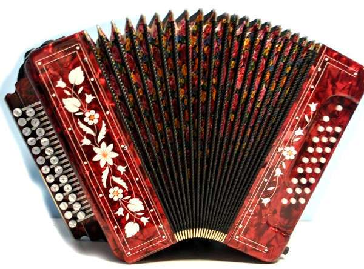
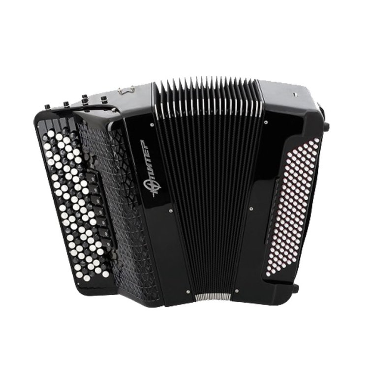
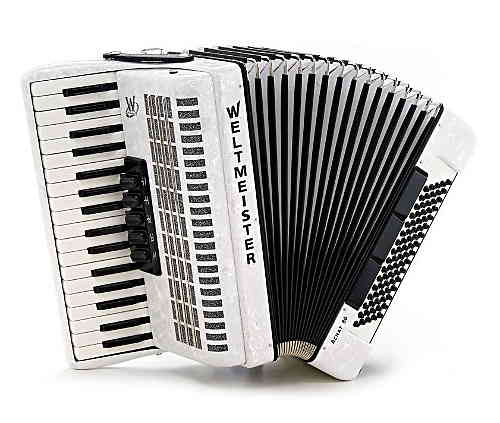
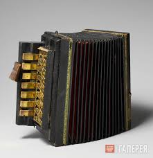
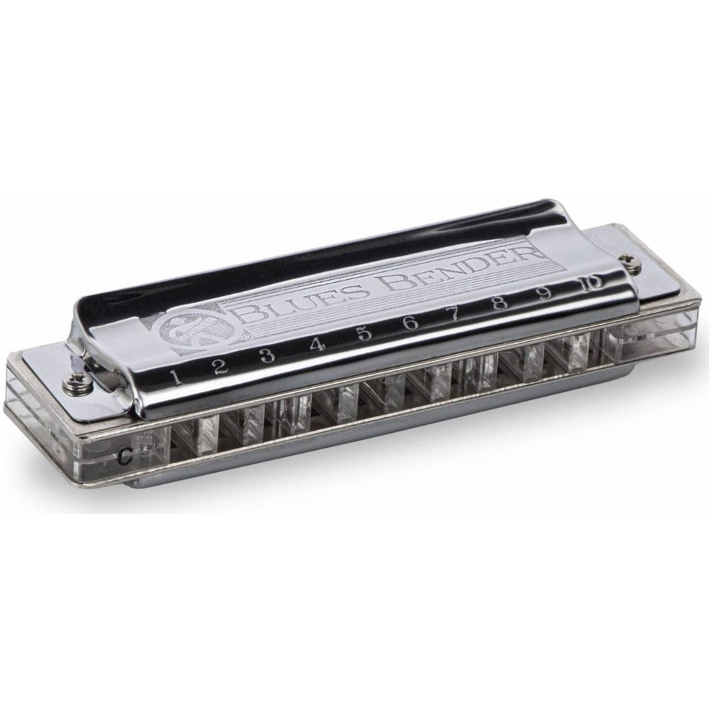
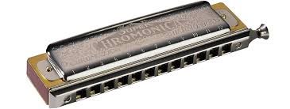
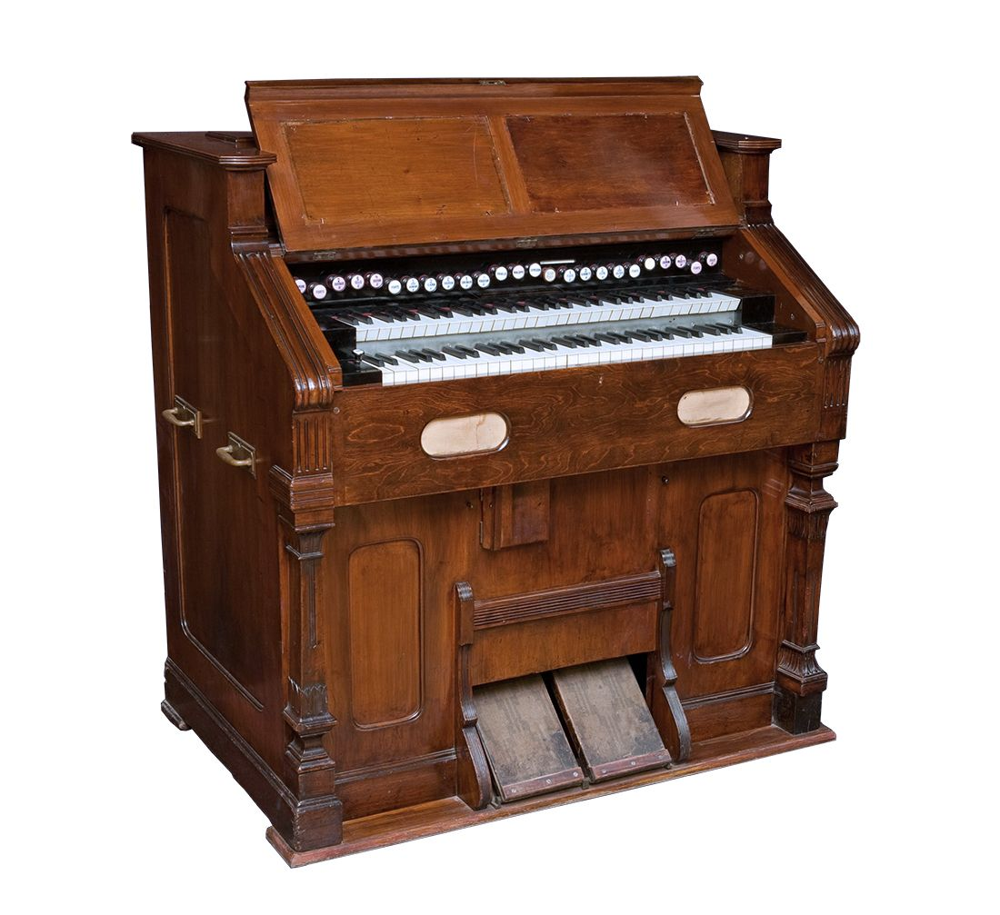
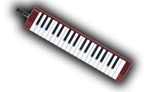

Есть много музыкальных иструментов, относящихся к семейству гармоник, где звук извлекается вибрацией металлических язычков под давлением воздуха, создаваемого мехами или дыханием. Инструменты характеризуются наличием клавиатур или отверстий для управления звуком.
к ним относятся:
- Ручные гармоники:
- Гармонь (хромка):

- Наиболее распространенный народный инструмент, часто двухрядный.
- Баян:

- Хроматическая гармоника с тремя-четырьмя рядами кнопок.
- Аккордеон:

- Инструмент с фортепианной клавиатурой справа и готовым аккомпанементом слева.
- Национальные гармоники:
- Различные виды (например, кавказская гармонь).
- «Черепашка»:

- Миниатюрная гармоника.
- Губные гармоники:
- Диатоническая (блюзовая):

- 10–20 отверстий.
- Хроматическая:

- Имеет слайдер (переключатель) для извлечения полутонов.
- Тремоло/Октавная/Басовая:
- Специализированные инструменты.
- Клавишно-пневматические инструменты:
- Фисгармония:

- Клавишный инструмент с ножной подачей воздуха.
- Мелодическая гармоника (мелодика):

- Клавишный инструмент, в который нужно дуть.